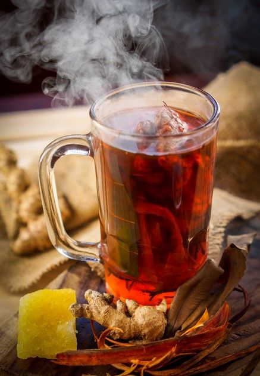
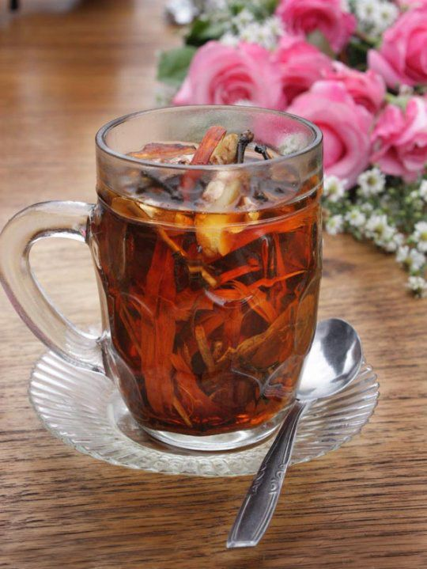

Selamat Datang
Pernahkah Anda merasakan hangatnya minuman tradisional yang penuh rempah dan kaya manfaat?
Wedang Runtah bukan sekadar minuman, tetapi warisan budaya khas Tegal yang mampu menghangatkan tubuh sekaligus menyehatkan.

Apa Itu Wedang Runtah?
Wedang Runtah adalah minuman tradisional khas dari Tegal, Jawa Tengah.
Kata wedang berarti minuman hangat, sedangkan runtah dalam bahasa Jawa berarti sisa-sisa.
Nama ini muncul karena wedang runtah dibuat dari berbagai rempah-rempah dan bahan sisa dapur yang masih bermanfaat,
seperti jahe, serai, kayu manis, kapulaga, cengkeh, pandan, dan gula.
Ciri Khas:
- Rasanya hangat, manis, dan aromatik.
- Disajikan panas, cocok untuk menghangatkan tubuh.
- Dulu sering diminum masyarakat pedesaan Tegal saat malam atau cuaca dingin.
- Rempah-rempahnya dipercaya bisa melancarkan peredaran darah, menghangatkan badan, dan meningkatkan daya tahan tubuh.

Resep Wedang Runtah
Bahan-bahan:
- 2 ruas jahe (geprek atau dibakar sebentar)
- 2 batang serai (memarkan)
- 3 lembar daun pandan
- 2 butir kapulaga
- 3 butir cengkeh
- 1 batang kayu manis
- 100 gram gula merah (serut)
- 2 sdm gula pasir (opsional, sesuai selera)
- 700 ml air
Cara Membuat:
- Rebus air hingga mendidih.
- Masukkan jahe, serai, daun pandan, kapulaga, cengkeh, dan kayu manis.
- Biarkan mendidih 10–15 menit sampai harum.
- Tambahkan gula merah dan gula pasir, aduk hingga larut.
- Angkat, saring bila perlu, lalu sajikan hangat.
Tips: Bisa ditambah susu, jeruk nipis, atau madu sesuai selera biar lebih segar.